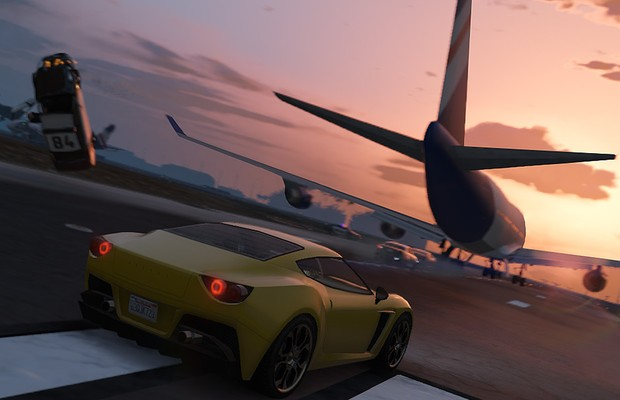
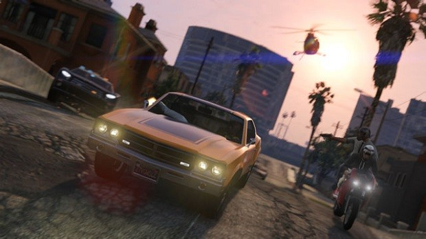
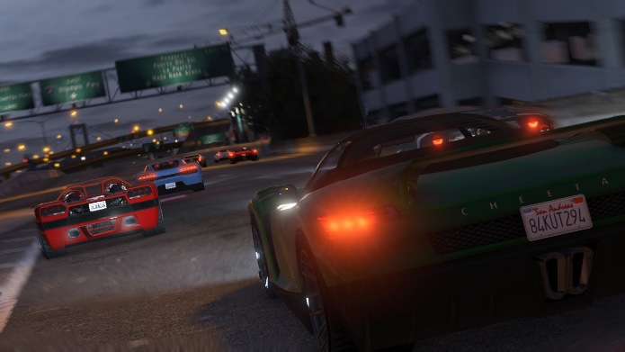
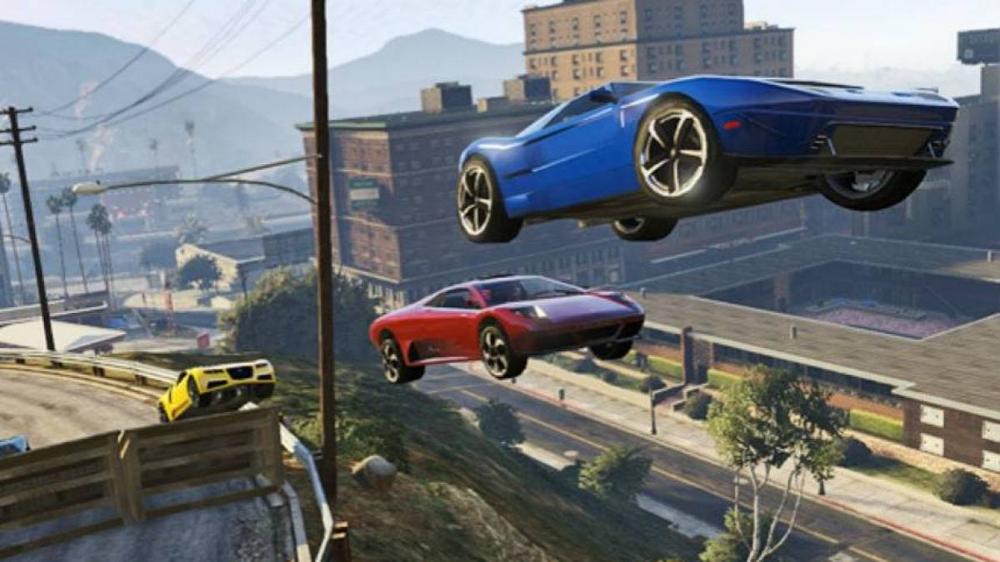

Veículos
Houveram várias melhorias na condução de veículos, onde os mesmos apresentam comportamentos bem mais complexos e realísticos, a física em GTA V foi melhorada deixando de ser algo totalmente exagerado para algo mais lógico e prático.
- Caso o jogador capotar seu veículo durante sua jogatina, o mesmo pode ser desvirado sem a necessidade de sair do veículo, apenas virando seu volante para esquerda ou direita.
- O sistema de dano em veículos deixou de ser algo exagerado, onde em títulos anteriores o veículo poderia cair de um prédio altíssimo sem explodir, onde ele ficava estranhamente deformando, agora em Grand Theft Auto V o carro pode sim explodir ao cair de uma altura grande com exceção do modo online, onde mesmo se cair de uma altura alta, o carro pode continuar normal, basta cair com as rodas para baixo, isso acontece para que o realismo não tire a diversão do Online.
- Caso o veículo tenha seu tanque de combustível perfurado, o mesmo irá derramar gasolina ou outro combustível pelo ambiente até se esgotar, inutilizando o carro, se o jogador atirar com alguma arma de fogo no liquido derramado no chão, o mesmo irá pegar fogo, podendo atingir o carro com o tanque perfurado fazendo-o explodir.
- Foram adicionados novos comandos ao veículo, agora o protagonista pode se abaixar dentro do carro, pode também ativar/desativar os faróis, além da clássica buzina que pode ser personalizada.
- Foi adicionado um novo tipo de veículo, o Submersível, capaz de se mover debaixo da água em até 180 metros abaixo do nível do mar.
- Os aviões voltaram em GTA V, agora o protagonista pilotará aviões de diversos tamanhos e tipos, além disso houve o retorno do paraquedas.
- A quantidade de veículos presente praticamente triplicou em relação ao titulo anterior (GTA IV).
- A modificação em carros está de volta em GTA V, a qualquer momento do jogo, o jogador pode levar seu carro para a Los Santos Customs e fazer customizações tanto na aparência como em seu desempenho
Imagens



